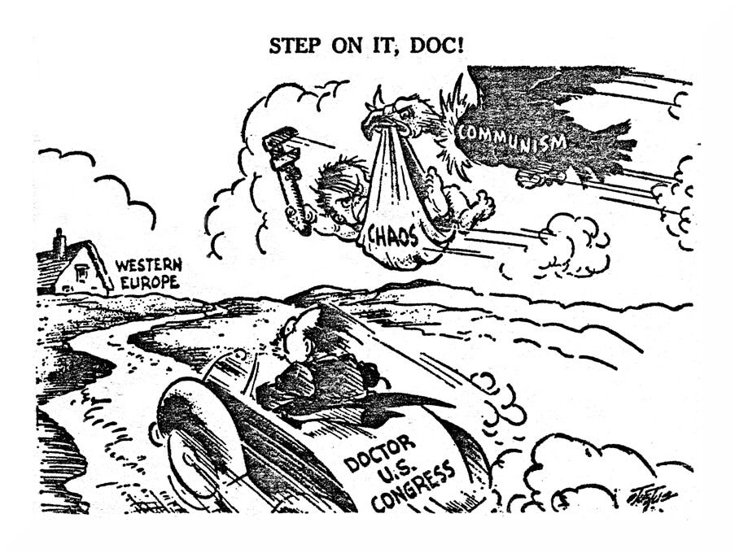

EventReaction / Response by U.S.A.Reaction / Response by Soviet UnionEurope devastated by WWII - Fear of communist governments taking control.
Berlin Blockade - Russian block access W. Berlin by land and Sea.
Fear Soviet military will attempt to take over W. Europe - make communist.
Decolonization in S.E.A. and Africa - West or East?
Communist N. Korea invades non-communist S. Korea
Suspicious communist spies in U.S.A. government and entertainment industry undermining U.S.A. democracy
Soviet Foreign Policy After World War II
In the cartoon above, who is the puppeteer?
Explain the symbolism of the puppets?
What would be an appropriate title for this cartoon?
How does this cartoon illustrate Soviet foreign policy after World War II?
Containment: Truman's Response to Soviet Expansion
Part A: Interpret the following cartoons by answering the questions below.
Cartoon 1: "Great Expectations"
Identify the country and leader represented by the undertaker.
Why would the cartoonist represent postwar England as a sick man?
Traditionally, England had policed the Mediterranean in order to protect its access to India and the Suez Canal. In what Mediterranean countries did the USSR make early postwar advances to take advantage of England's incapacity to defend the Mediterranean balance of power?
In a sentence, summarize the meaning of this cartoon.
Through what 1947 policy did the United States act to spoil Russia's "Great Expectations" in this area?
Cartoon 2: "Step on it, Doc!"
In what way would the continuation of chaos in Western Europe be beneficial to Communism?
What country might take advantage of the weakness of Western Europe in 1947?
What country does the cartoonist see as the savior of Western Europe?
In a sentence, summarize the meaning of this cartoon.
Through what 1947 policy did the United States hasten to send economic aid to a Europe devastated by war?
Cartoon 3: "Unintentional Cupid"
Name some of the countries represented under the Atlantic Pact.
What country and leader are portrayed in the role of Cupid?
What historic agreeman is being represented here as a marriage?
In a sentence, summarize the meaning of this cartoon.
In what sense could the Atlantic Pact be referred to as a "shotgun wedding"?
Cartoon 4: "History Doesn't Repeat Itself."
Who is the man leading the United Nations?
To what 1950 conflict are they presumably headed?
What historic incidents leading to World War II prompted the inscription on the League of Nations tombstone?
In a sentence, summarize the meaning of this cartoon.
In your opinion, why didn't history repeat itself after World War II?
Part B: To conclude this lesson, interpret the final cartoon below by answering the questions at the end.
Why was the conflict between the United States and the Soviet Union after World War II often referred to as "the cold war"?
Accoding to the cartoonist, what was America's most effective weapon in the Cold War?
In your opinion, did American involvement in postwar Western Europe result in "heating up the cold war" or serve as a measured alternative to World War III? Explain your answer.
How did containment permanently change United States peacetime foreign policy?
Korea: War Without Victors
- What is meant by each of these phrases from the article:
"the little broken finger of Asia"
"Red China's Joe"
Why were Americans fighting along with Colombians, Ethiopians, and Porto Ricans?
Why had the Chinese entered the war?
Why weren't Americans allowed to go on the offensive?
Why did the soldiers feel just the sort of frustration that got General MacArthur fired?
Is the Korean War presented in histories today as a success or failure? Explain your answer.
In your opinion, did the 33,000 American men who were killed in battle die in vain? Explain your reasoning.
How would you justify the war to a mother whose son was killed in the war?
How would Woodrow Wilson and Franklin Roosevelt - both firm believers in collective security - have viewed the outcome of the war?
Has history vindicated President Truman's decision to fire General MacArthur? Explain your answer.
What other limited wars has the world witnessed since the end of the Korean Conflict? Why are we likely to have more frustrating wars of this kind in the future?
Loyalty vs. Liberty: The McCarthy Era
The following activity involves recognizing cause-effect relationships in the McCarthy era. Where the cause is given, your task is to supply the effect stemming from that cause. Where the effect is given, you need to supply the cause for that result.
Causes
Effects
Actors and writers leaned toward Communist and Socialist principles
China became Communist in 1949
Accusations of HUAC about persons with Communist leanings and questionable loyalty
War
Enhanced McCarthy's power and prestige in early 1950s
Rumors of an artist's placement on the blacklist.
Automatic damage to reputation
Cooperation with HUAC
Publications of "Red Channels"
Need for quality writers
Blacklist began losing its effect
Lack of creativity in movies
Loyalty vs. Liberty: The McCarthy Era
List examples of planning displayed in a Levittown.
Why did Levitt plan everything the same?
Cite examples of conformity in Levittown.
How does Levitt attempt to show variety? In your opinion, does it succeed? Explain your position.
Levittown in the 1980s has taken on a new look. How has conformity been replaced?
Why has conformity been replaced in Levittown?
Explain which Levittown - old or new - better expresses the American spirit.
Loyalty vs. Liberty: The McCarthy Era
Part A. One of the best ways to review a period in history is through a study of its most important events. Below are some of the milestones from 1920 to 1960. Recall the turning points of this period by completing the chart that follows, listing for each item a cause, an effect, and a category such as political, economic, or social.
MilestonesCauseEffect(s)Category1920 Census:
Immigration Act of 1924:
Stock Market Crash:
Inauguration of Franklin D. Roosevelt:
Wagner Act:
"Rosie the Riveter":
D-Day:
Atomic bomb:
Truman Doctrine:
Levittown:
Brown v. Board of Education of Topeka:
Salk vaccine: